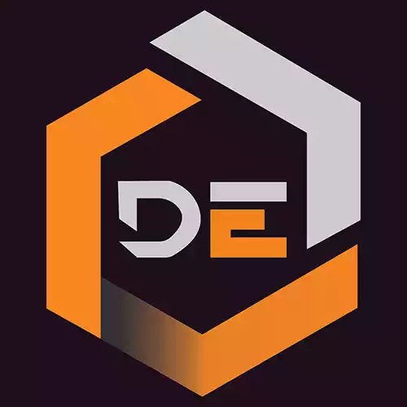

Web Application
Dalati QR Tools
Generate, scan and customize QR codes instantly in the browser. Fast, private, no signup.
HTMLCSSJavaScript
I build Python desktop apps and web tools that save time, and I lead Dalati English — an educational platform reaching millions.

Dalati Englishis a massive, fully integrated educational platform. We provide a diverse, interactive environment that transforms language acquisition into a seamless and engaging experience for a global community.
4M+
Followers across social channels
Practical web utilities, workflow automation, and secure desktop software.
Generate, scan and customize QR codes instantly in the browser. Fast, private, no signup.
Encrypt and protect files and text with strong local encryption. Private by design.
Merge, split and compress PDFs offline with a simple, fast workflow.